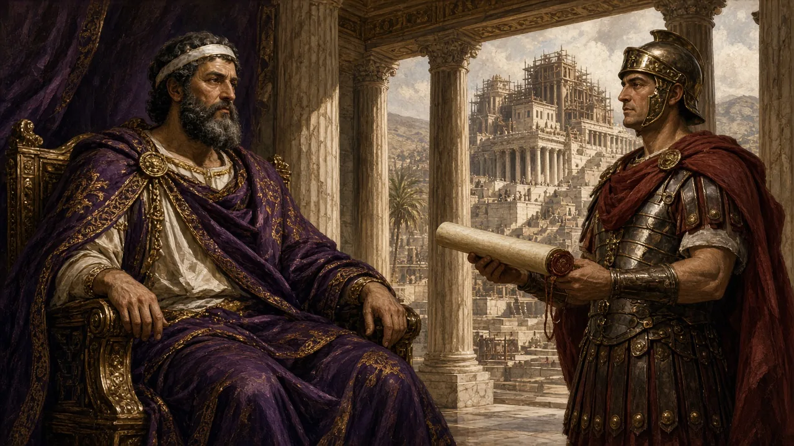

Four Trails from David to Today
I
Kings & Prophets
How did a title for kings become a hope for the future?
II
Hope under Empire
What did Jews expect under Greek and Roman rule?
III
Rabbis & Maimonides
How did the rabbis teach Jews to wait?
IV
False Dawns & Modern Paths
How have Jews lived with the hope since?
Trail I
Kings & Prophets
How did a title for kings become a hope for the future?
What “Messiah” Means
The word: Hebrew mashiach, “anointed one”; Greek christos
Anointed with oil: kings, and also priests, were installed in office this way
Even a foreigner: Isaiah calls the Persian king Cyrus “his anointed” (Isa 45:1)
Not yet a future savior: the Hebrew Bible never uses the word for an end-time figure
In the Bible, a “messiah” is a real officeholder God has chosen.
David: From Shepherd Boy to King
God rejects Saul: Samuel is sent to Bethlehem, to the sons of Jesse
Not the eldest: seven sons pass by; the youngest is out “keeping the sheep”
Anointed: Samuel pours oil on David “in the presence of his brothers”
King: David later unites the tribes and makes Jerusalem his capital

The Promise to David’s House
The setting: David wants to build God a “house,” a temple
The twist: through the prophet Nathan, God promises to build David a “house,” a dynasty
Your house and your kingdom shall be made sure forever before me; your throne shall be established forever.
2 Samuel 7:16 (NRSV)
This promise is the root of every later hope for a king from David’s line.
When the Throne Fell: The Prophets’ Hope
A shoot shall come out from the stump of Jesse, and a branch shall grow out of his roots.
Isaiah 11:1 (NRSV)
A Just King
Jeremiah: God will “raise up for David a righteous Branch” who will “execute justice” (23:5).
Gathering
Isaiah: he will “gather the dispersed of Judah from the four corners of the earth” (11:12).
Peace
Isaiah: “The wolf shall live with the lamb” (11:6).
586 BCE: Babylon ends the line of kings. The promise becomes a hope for the future.
Pause & Connect
Why would a promise about a king become a hope about the future?
Trail II
Hope under Empire
What did Jews expect under Greek and Roman rule?
Many Hopes in the Second Temple Era
A king from David: some texts pray for a son of David to drive out foreign rulers
Two messiahs? a Dead Sea Scroll looks for “the Messiahs of Aaron and Israel”
A heavenly figure: some looked for a “Son of Man” from heaven (from Daniel 7)
No messiah at all: many writings of the period hope for God’s rescue with no messiah

Bar Kokhba and Rabbi Akiva, 132–135 CE
A leader: Simeon bar Kosiba leads a second revolt against Rome
A verse: Rabbi Akiva reads “a star shall come out of Jacob” (Num 24:17) as Bar Kokhba, “son of the star”
“This is the king messiah”: a colleague answers, “Akiva, grass will grow in your cheeks and he still will not have come”
135 CE: Rome crushes the revolt; later rabbis nickname him bar Koziva, “son of the lie”
Pause & Connect
Rabbi Akiva backed a messiah who failed. What lesson might later rabbis draw?
Trail III
Rabbis & Maimonides
How did the rabbis teach Jews to wait?
The Rabbis: Wait, but Don’t Calculate
Don’t Calculate
“May those who calculate the end of days be cursed” (Sanhedrin 97b).
Today, If…
Asked “When?”, the messiah answers “Today”: “if you will listen to his voice” (Sanhedrin 98a).
Same World
Shmuel: the only difference will be freedom from foreign rule (Berakhot 34b).
A Dissent
Rabbi Hillel: there is no messiah to come; he came in Hezekiah’s day (Sanhedrin 99a).
The Talmud keeps the hope and the arguments about it side by side.
Hope in Daily Prayer
Speedily cause the sprout of David, Your servant, to flourish… We hope all day for Your deliverance.
Weekday Amidah, the blessing for the kingdom of David (Metsudah translation)
I believe with complete faith in the coming of the Messiah, and even though he may tarry, nevertheless, I yearn every day for his coming.
“I believe” (Ani Ma’amin), principle 12 (Metsudah translation)
The hope is said, not just studied: three times a day in the Amidah.
Maimonides: A Human King, Tested by Results
Principle 12 (c. 1168): believe “that he will come and not to think that he is late”; set no date
No miracles needed: Akiva backed Bar Kokhba, and “The Sages did not ask him for any signs or wonders”
The test: a king from David’s house who keeps the Torah may be presumed the messiah; if he rebuilds the Temple and gathers the exiles, he “is definitely the Mashiach”
Same world: “the world will continue according to its pattern”; the sages longed to be free for “Torah and wisdom”
Trail IV
False Dawns & Modern Paths
How have Jews lived with the hope since?
Shabbetai Tzvi, 1665–1666
A mystic: a Kabbalist from Smyrna (now İzmir, Turkey) who claims to be the messiah
A prophet: Nathan of Gaza proclaims him and names 1666 as the year of redemption
Mass excitement: in 1665 the movement spreads to Venice, Amsterdam, Hamburg, London, and North Africa
1666: jailed by the Ottomans and threatened with torture, he converts to Islam
Most followers were devastated; a few insisted even the conversion was part of the plan.
Reform: From a Messiah to a Messianic Age
We recognize, in the modern era of universal culture of heart and intellect, the approaching of the realization of Israel’s great Messianic hope for the establishment of the kingdom of truth, justice, and peace among all men.
Pittsburgh Platform (1885), article 5
1885: no longer “a nation, but a religious community”: no expected return to Palestine or Temple sacrifice
1999: “we are called to help bring nearer the messianic age” through tikkun olam, repairing the world
Zionism and Redemption: A Debate
Political Zionism
Most early Zionist leaders were secular. They sought a national home through politics and settlement, not a messiah.
Religious Zionism
Many religious Zionists pray for Israel as “the first flowering of our redemption.”
Haredi Opposition
Some ultra-Orthodox Jews hold that only God, through the messiah, may end the exile; they cite the Talmud’s “three oaths.”
Is the State of Israel part of the messianic story, unrelated to it, or premature? Jews disagree.
Orthodox Hope and Chabad
Orthodox Judaism: keeps the classical hope for a human king from David’s line, prayed for every day
Chabad-Lubavitch: a Hasidic movement whose leader, Rabbi Menachem Mendel Schneerson (1902–1994), made the messiah’s coming central
Hastening it: he urged Jews to do more good deeds to bring the redemption nearer
A dispute: some followers proclaimed him the messiah; after his death in 1994 the movement divided over that claim
Most Jews, including most Orthodox Jews, do not accept any claimant as the messiah.
Mini-Lecture Synthesis
David
anointed
anointed
Promise
2 Sam 7
2 Sam 7
Prophets
after 586
after 586
Many Hopes
under Rome
under Rome
Bar Kokhba
132–135
132–135
Rabbis &
Maimonides
Maimonides
Shabbetai
1665–66
1665–66
Modern
Paths
Paths
A promise to one family became a hope for the world. Which change surprised you most?
Quick Self-Check
Question 1
What does “messiah” mean?
Answer: “Anointed one”: in the Bible, a king or priest installed with oil.
Question 2
Why does the hope center on David?
Answer: God promised David that his throne would be established forever (2 Samuel 7:16).
Question 3
What happened with Bar Kokhba?
Answer: Rabbi Akiva called him the king messiah, but Rome crushed his revolt in 135 CE.
Question 4
How does Reform Judaism describe the hope?
Answer: As a messianic age of justice and peace that people help bring nearer.
Answer each in your head first, then advance to reveal the answer.
Sources
Bible quotations: NRSV (1989), checked on biblestudytools.com (NRS)
Talmud (William Davidson Edition), Midrash Rabbah (Sefaria, 2022), Mishneh Torah (trans. E. Touger), Maimonides’ Mishnah commentary and prayer-book texts (Metsudah, Koren), all via Sefaria
Encyclopædia Britannica: “messiah,” “Shabbetai Tzevi”; CCAR platforms (1885, 1999); Josephus (Whiston); Dead Sea Scrolls 1QS 9:11 (trans. García Martínez); Chabad sources in slide U’s notes
Images: AI-generated imaginings reused from Chapter 10 Lectures 1–2; none are historical reconstructions